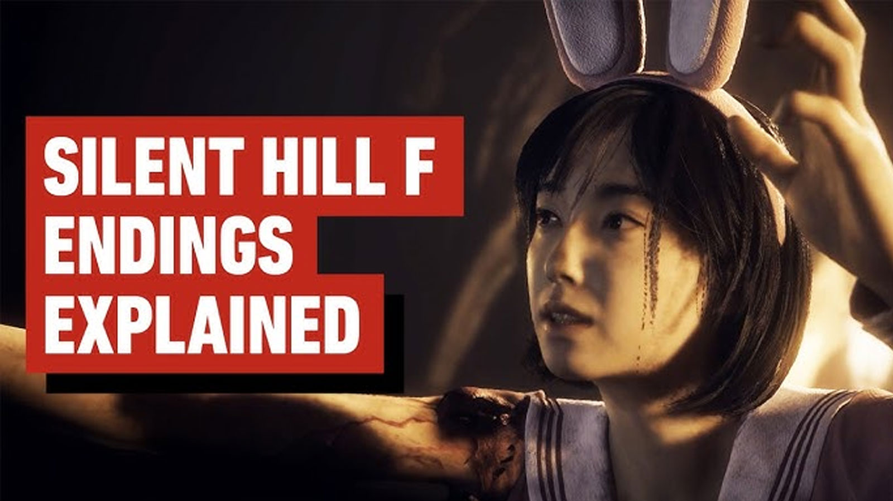

Silent Hill f – All Endings Explained
In Silent Hill f, there are five possible endings. The first ending (Coming Home to Roost) is unlocked on your first playthrough. The other endings require *New Game Plus*. The choices you make — including Red Capsule usage and whether you purify the Sacred Sword — determine which endings you can access.
Quick Reference Table
| Ending | Unlocked When | Key Conditions |
|---|---|---|
| 1) Coming Home to Roost | First playthrough (or NG+ if no other conditions met) | Default, first run ending. |
| 2) Fox's Wedding | NG+ | No Red Capsules; either purify or leave Sacred Sword untouched. |
| 3) The Fox Wets Its Tail | NG+ | No Red Capsules; take Sacred Sword but do NOT purify it. |
| 4) Ebisugaoka in Silence | NG+ (save with ≥2 other endings already completed) | No Red Capsules; get & purify the Sacred Sword; offer Brooch to Ancient Jizo. |
| 5) The Great Space Invasion! (UFO ending) | NG+ | Listen to UFO radio; read 3 posters in order; read movie review; trigger UFO event. |
Ending 1: Coming Home to Roost
This is the ending you get on your first playthrough. On NG+, it will still be your outcome if none of the other ending criteria are met.
Ending 2: Fox's Wedding
- Play on NG+.
- Do not take any Red Capsules.
- You may leave the Sacred Sword unpurified or purify it — both are acceptable.
- Acquire the item Agura no Hotei-Sama in the late game area.
Ending 3: The Fox Wets Its Tail
- Play on NG+.
- Do not take any Red Capsules.
- Take the Sacred Sword but do not purify it.
Ending 4: Ebisugaoka in Silence
- NG+ save file that already has two non-UFO endings recorded.
- Do not take Red Capsules.
- Obtain and purify the Sacred Sword.
- Offer the Brooch to the Ancient Jizo statue (southwest of your home) during the final return.
Ending 5: The Great Space Invasion! (UFO ending)
- Listen to the UFO radio broadcast early in Ebisugaoka.
- Read all three "The Great Space Invasion" movie posters in order.
- Read the movie review.
- Later, in the alley near the general store, defeat monsters and interact with the UFO to trigger the ending. Reward is the PP-8001 weapon.
Notes on Red Capsules & Sacred Sword
Red Capsules usage is a major gating mechanism: to access endings 2 through 4, you must avoid consuming any Red Capsules. The Sacred Sword's state (purified vs unpurified) toggles between endings 2 and 3, and purification is required for Ending 4.
Recommended Playthrough Order (3-Run Strategy)
- Run 1 (first playthrough): Get Ending 1 (Coming Home to Roost).
- Run 2 (NG+): Aim for Ending 3 (no capsules; take sword & don't purify).
- Run 3 (NG+ with two endings recorded): Aim for Ending 4 (no capsules; get & purify sword; Brooch → Jizo). You can also trigger the UFO ending on a side branch.
Sources: GamesRadar "All Endings" explainer, PowerPyx all endings guide, PCGamesN endings overview, PC Gamer endings article, Game8 endings & capsule/sword interactions.